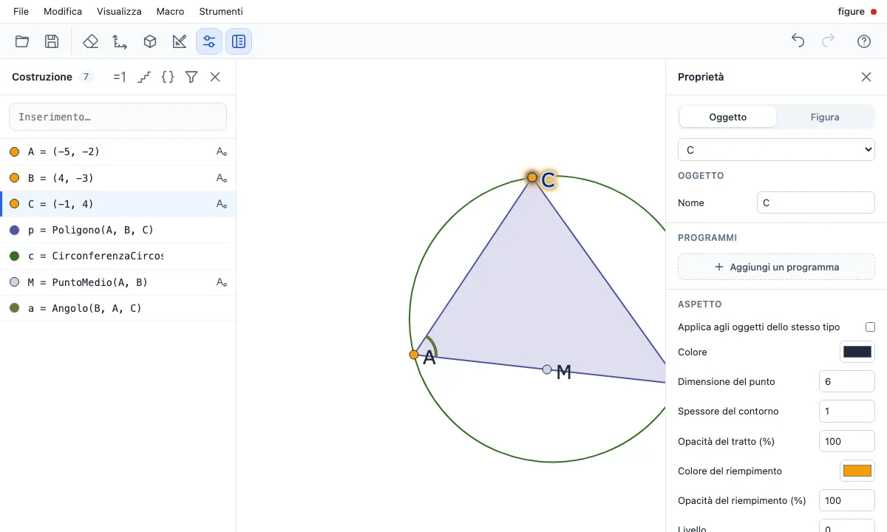
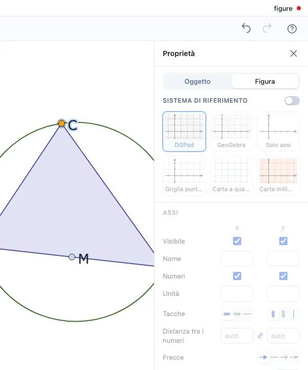

Proprietà e sistema di riferimento

Il pannello
- Si apre con o con della zona contestuale; si chiude con la sua croce, lo stesso pulsante o Esc.
- Due schede: Oggetto e Figura.
- L’oggetto da impostare si sceglie nella figura, dalla sua riga o nell’elenco «Scegli un oggetto…» (oggetti nascosti compresi). Un clic nella figura seleziona invece di costruire; pulsanti e caselle si selezionano senza attivarsi. Uno strumento del menu o la riga di inserimento costruiscono normalmente, e l’oggetto creato compare nel pannello.
- Le modifiche sono immediate e annullabili.
- Campi numerici: trascinare in orizzontale regola il valore (Maiusc: dieci volte più fine), un clic permette di digitarlo. Un trascinamento conta come un solo passo di annullamento.
- Un pulsante ↺ accanto a un colore lo riporta a quello che lo strumento dà per impostazione predefinita.
La scheda «Oggetto»
| Sezione | Impostazioni |
|---|---|
| Oggetto | nome; per un’espressione, la definizione |
| Aspetto | applica agli oggetti dello stesso tipo, colore, dimensione del punto, spessore, contorno, opacità del tratto e del riempimento, colore del riempimento, tratteggio, livello (ordine di disegno) |
| Visualizzazione | oggetto visibile, mostra il nome, dimensione del testo, decimali del valore (o non mostrarlo) |
| Punto | forma (cerchio, quadrato, croce, rombo), posizione del nome in gradi, traccia, passo orizzontale e verticale (spostamento a scatti) |
| Segmento | contrassegno (trattini di uguale lunghezza) |
| Angolo | raggio dell’arco, segno dell’angolo retto (squadra aperta, arco, quadrato, punto, squadra) |
| Luogo, lista | numero di punti; spessore dei segmenti |
| Slider | incremento, lunghezza, verticale, colore e dimensione della manopola |
| Animazione | velocità (0: arresto), verso inverso, all’estremità: ricomincia, avanti e indietro o fermati |
Più oggetti
Con una selezione multipla, sono mostrate solo le impostazioni comuni a tutti; un valore che cambia da un oggetto all’altro è in corsivo grigio. Ctrl-clic, Maiusc-clic o pressione prolungata (figura o pannello «Costruzione») aggiungono o tolgono un oggetto.
La scheda «Figura»

Un clic su un asse apre questa scheda.
| Sezione | Impostazioni |
|---|---|
| Sistema di riferimento | visibile o no; modelli DGPad, GeoGebra, solo assi, griglia punteggiata, carta a quadretti, carta millimetrata (solo aspetto, né zoom né sfondo) |
| Assi (x e y) | visibile, nome, numeri, unità (π: multipli di π/2), tacche, distanza tra i numeri (vuoto: auto; 🔗 collega x e y), frecce, colore, dimensione e grassetto dei numeri, stile DGPad o GeoGebra, semiassi positivi |
| Griglia | visibile o no, distanza tra le linee, suddivisioni, colore (quello degli assi per impostazione predefinita), spessore, tratto continuo, punteggiato o tratteggiato |
| Zoom e spostamento | asse fisso sullo schermo, zoom centrato sull’origine |
| Figura | sfondo; angoli in gradi (predefinito) o radianti; segmenti sopra i poligoni |
In 3D
| Sezione | Impostazioni |
|---|---|
| Assi | triedro visibile, colore, spessore |
| Pavimento | visibile, colore (↺: blu sopra, marrone sotto), opacità, dimensione, distanza, colore e spessore delle linee |
| Vista | prospettiva |
Queste impostazioni sono annullabili; zoom, spostamento e rotazione della vista no.